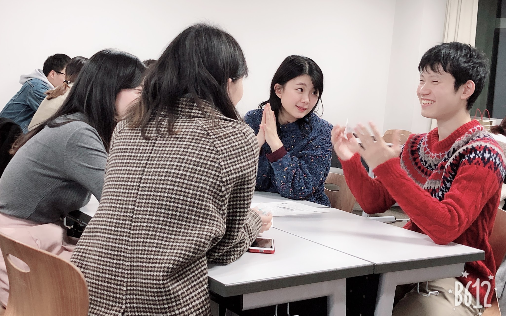
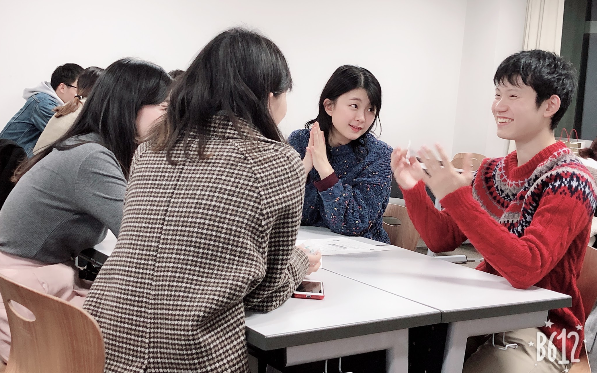
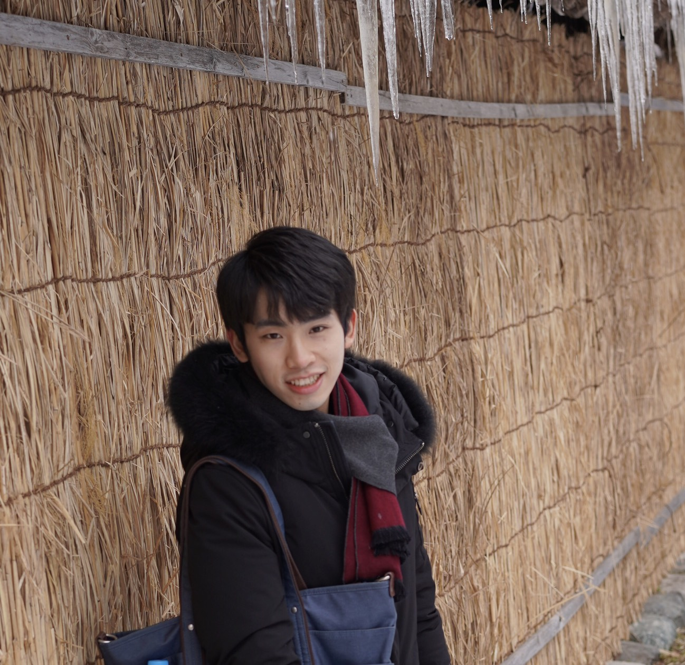

活動を見る


 

概要を知る
日中橋は日本人学生と中華圏の留学生との🇨🇳国際交流 x
友達作り🇯🇵をコンセプトに活動する団体です✨
「周りにいるけど、中々接点のない留学生」
彼らと一緒にクリエイティブな活動をして仲良くなりませんか？
昨年度は
「🍠台湾流行デザート🍨を作ろう！」
「徳川園で紅葉狩り🍁」
「🏓卓球トーナメント＆クリスマス会🎄！」
などたくさんのユニークな活動を開催しました。
中国語や事前知識は一切不要です！
留学生と面白いことをやって、仲良くなりたいみんな、活動でお待ちしております😍
「周りにいるけど、中々接点のない留学生」
彼らと一緒にクリエイティブな活動をして仲良くなりませんか？
昨年度は
「🍠台湾流行デザート🍨を作ろう！」
「徳川園で紅葉狩り🍁」
「🏓卓球トーナメント＆クリスマス会🎄！」
などたくさんのユニークな活動を開催しました。
中国語や事前知識は一切不要です！
留学生と面白いことをやって、仲良くなりたいみんな、活動でお待ちしております😍
全て表示
SNSで繋がる
メンバーからのひとこと
なな
南山アジア学科
視野が広がる🌎
高校まで外国の友達ができる機会は少ないですが、日中橋で中国台湾香港の友達とお話をしたり、遊びに行くことで、たくさんの文化を学べました！また、改めて視野や考え方が広くなったように感じます✨✨

うどん
名大工学部
橋を作って海を越える
地理から考えると日本と中国は近いですが、心の距離は遠いです。日中橋に入って、お互いの誤解を解くのはもちろん、たくさんの友達と大切な思い出ができました。
こんな人におすすめ
- ＃外国語はできないけど、留学生と仲良くなりたい！
- ＃新しい世界を知りたい！
- ＃国際交流をしたい！
- ＃中国や中国語に興味がある！
- ＃留学に行きたい！
SNSで繋がる
貴重な体験をここで
日本にいながら中華系の留学生とお友達になれます！言語に自信がなくても、楽しめる企画ばかりで心配なし！気軽にお友達作り、国際交流しませんか？